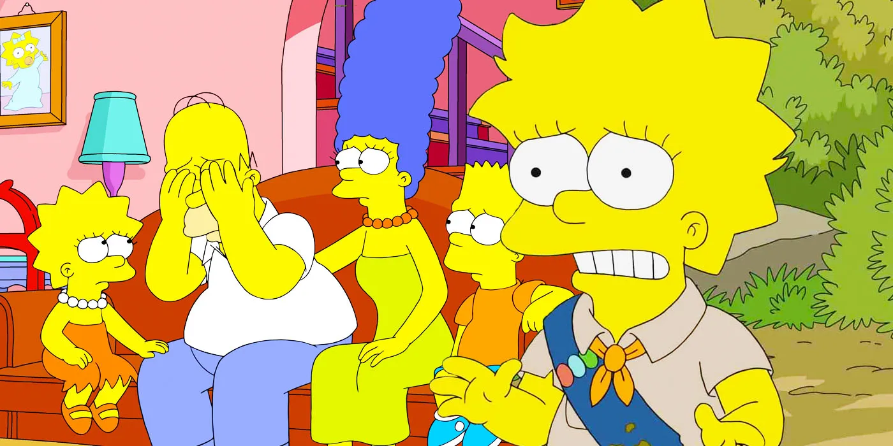
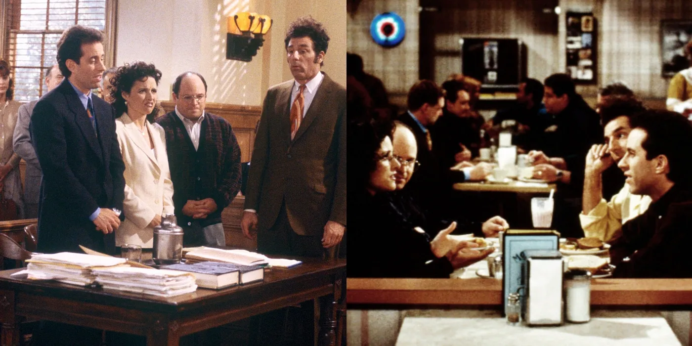
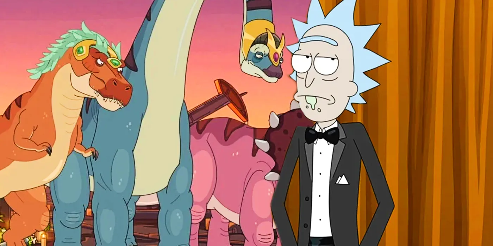

LATEST
Werewolf by Night Has MCU's 4th Highest Rotten Tomatoes Audience Score
Published On

The official Rotten Tomatoes audience score for Werewolf by Night is the fourth-highest of the entire Marvel
Cinematic Universe. This project is one of the final entries in Marvel's Phase 4, which has run from the
beginning of 2021 through the end of this year. In addition to following various hero's adventures post-Blip,
this Phase has been notable for the increase of television projects accompanying the heroes' cinematic outings,
thanks to Disney+ introducing a variety of MCU series that directly engage with the canon.

The Simpsons Broke Its Own Rules (To Mock The Show’s Decline)
The Simpsons broke the show's own anthology format in
season 34, but this risky choice allowed the cartoon
comedy to mock its own critical failures.

Seinfeld: 10 Endings Better Than The Finale, According To Reddit
The Seinfeld series finale isn't a favorite among fans, and Redditors are sharing the ways they would have concluded the sitcom instead.

Rick & Morty Shows How A Kind Sci-fi Alien Earth Takeover Would Be Worse
Rick & Morty season 6 showed that a takeover of Earth by well-intentioned
extraterrestrials could be just as bad as a typical evil-alien invasion.